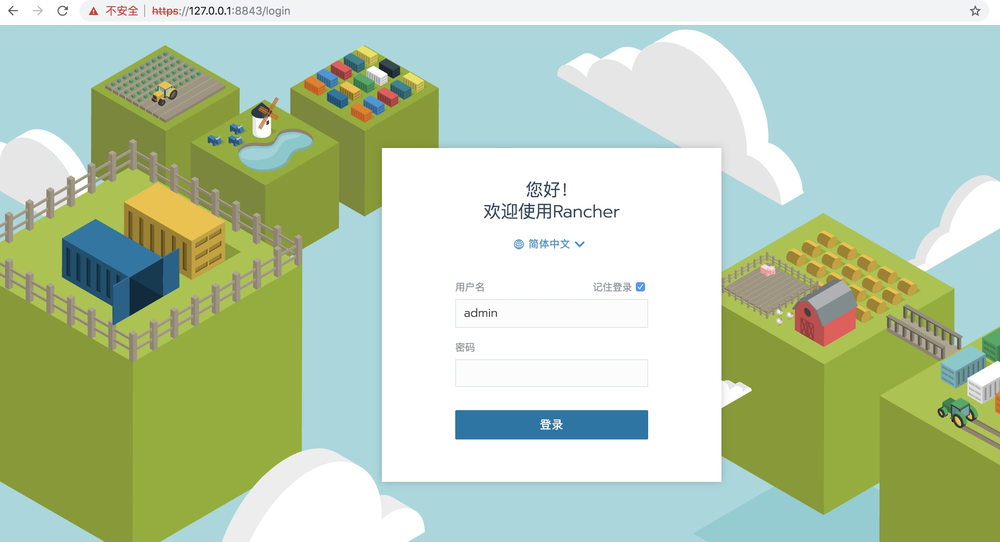
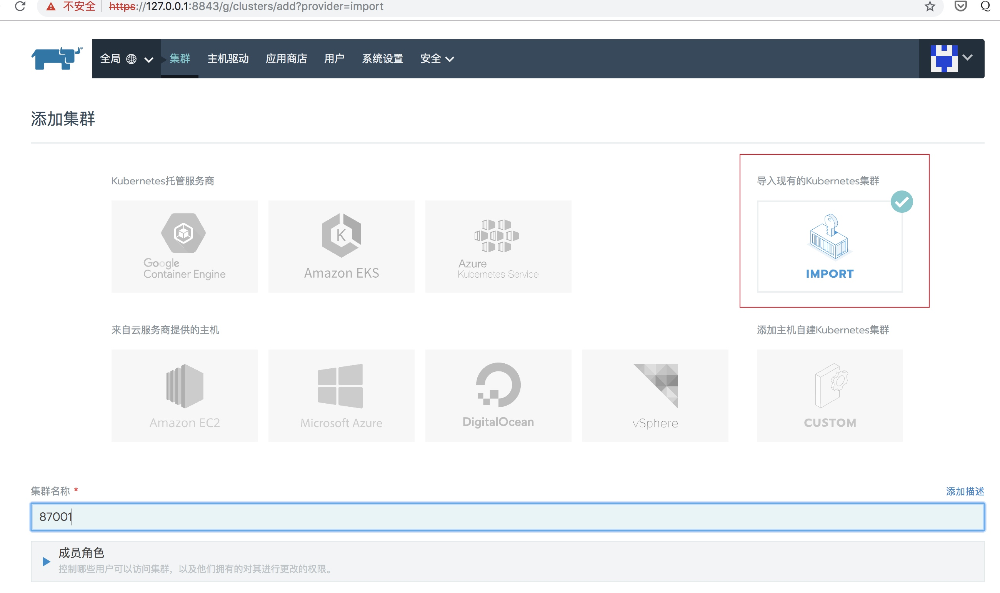
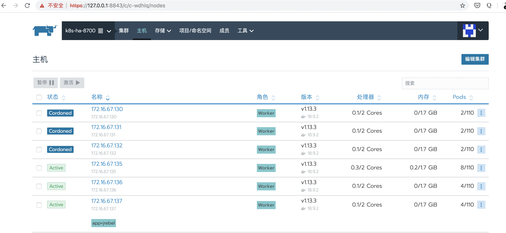
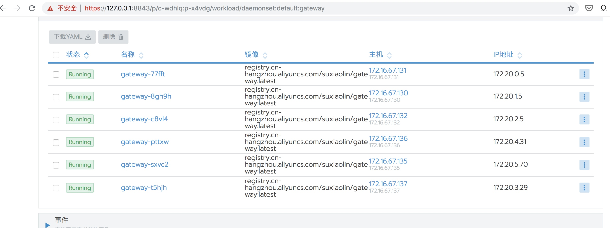
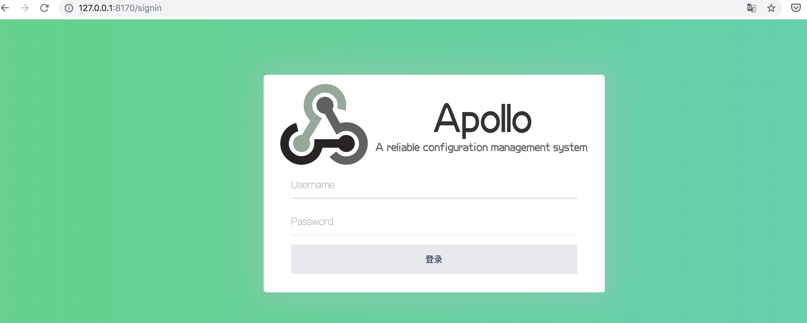
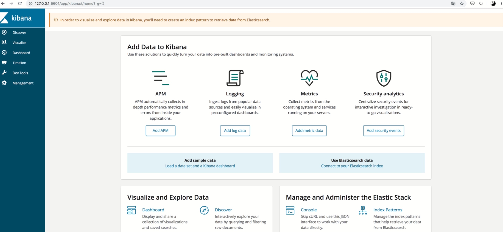
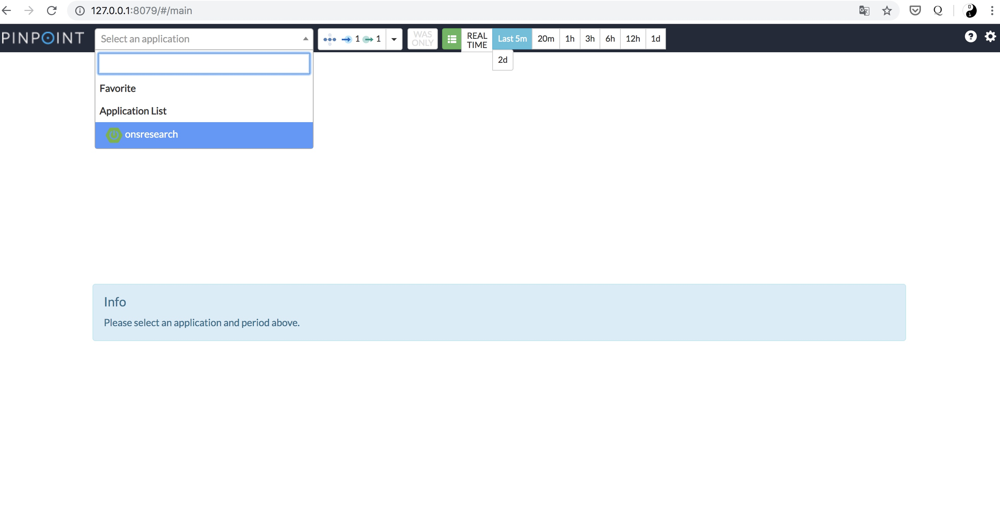

整理了好久，来一波干货😄🎉
准备k8s集群机器
一台k8s部署机（堡垒机) 1G以上
3台k8s master节点机器 2c4G以上
3台k8s node节点机器 2c4G以上
为以上7台机器全部分配固定ip
| 机器 | ip |
|---|---|
| K8s-ha-master1 | 172.16.67.130 |
| K8s-ha-master2 | 172.16.67.131 |
| K8s-ha-master3 | 172.16.67.132 |
| K8s-ha-node1 | 172.16.67.135 |
| K8s-ha-node2 | 172.16.67.136 |
| K8s-ha-node3 | 172.16.67.137 |
| K8s-ha-deploy | 172.16.67.140 |
安装k8s集群
登陆部署机
生成ssh key: ssh-keygen -t rsa -b 4096 -C "your_email@example.com"
将公钥拷贝到k8s所有的机器上
ssh-copy-id 172.16.67.130
ssh-copy-id 172.16.67.131
ssh-copy-id 172.16.67.132
ssh-copy-id 172.16.67.135
ssh-copy-id 172.16.67.136
ssh-copy-id 172.16.67.137
ssh-copy-id 172.16.67.140
下载k8s docker安装工具包
git clone https://github.com/gjmzj/kubeasz.git
mkdir -p /etc/ansible
mv kubeasz/* /etc/ansible
参考这个文档https://github.com/gjmzj/kubeasz/blob/master/docs/setup/quickStart.md 下载k8s集群需要的二进制文件和离线docker镜像并解压
把以上的机器配置到ansible里
cd /etc/ansible && cp example/hosts.m-masters.example hosts
# 集群部署节点：一般为运行ansible 脚本的节点
# 变量 NTP_ENABLED (=yes/no) 设置集群是否安装 chrony 时间同步
[deploy]
127.0.0.1 NTP_ENABLED=no
# etcd集群请提供如下NODE_NAME，注意etcd集群必须是1,3,5,7...奇数个节点
[etcd]
172.16.67.130 NODE_NAME=etcd1
172.16.67.131 NODE_NAME=etcd2
172.16.67.132 NODE_NAME=etcd3
[new-etcd] # 预留组，后续添加etcd节点使用
#192.168.1.x NODE_NAME=etcdx
[kube-master]
172.16.67.130
172.16.67.131
172.16.67.132
[new-master] # 预留组，后续添加master节点使用
#192.168.1.5
[kube-node]
172.16.67.137 NEW_NODE=yes
172.16.67.136 NEW_NODE=yes
172.16.67.135
[new-node] # 预留组，后续添加node节点使用
#192.168.1.xx
# 参数 NEW_INSTALL：yes表示新建，no表示使用已有harbor服务器
# 如果不使用域名，可以设置 HARBOR_DOMAIN=""
[harbor]
#192.168.1.8 HARBOR_DOMAIN="harbor.yourdomain.com" NEW_INSTALL=no
# 负载均衡(目前已支持多于2节点，一般2节点就够了) 安装 haproxy+keepalived
[lb]
172.16.67.130 LB_ROLE=backup
172.16.67.131 LB_ROLE=master
#【可选】外部负载均衡，用于自有环境负载转发 NodePort 暴露的服务等
[ex-lb]
#192.168.1.6 LB_ROLE=backup EX_VIP=192.168.1.250
#192.168.1.7 LB_ROLE=master EX_VIP=192.168.1.250
[all:vars]
# ---------集群主要参数---------------
#集群部署模式：allinone, single-master, multi-master
DEPLOY_MODE=multi-master
#集群主版本号，目前支持: v1.8, v1.9, v1.10，v1.11, v1.12, v1.13
K8S_VER="v1.13"
# 集群 MASTER IP即 LB节点VIP地址，为区别与默认apiserver端口，设置VIP监听的服务端口8443
# 公有云上请使用云负载均衡内网地址和监听端口
MASTER_IP="172.16.67.165"
KUBE_APISERVER="https://{{ MASTER_IP }}:8443"
# 集群网络插件，目前支持calico, flannel, kube-router, cilium
CLUSTER_NETWORK="flannel"
# 服务网段 (Service CIDR），注意不要与内网已有网段冲突
SERVICE_CIDR="10.68.0.0/16"
# POD 网段 (Cluster CIDR），注意不要与内网已有网段冲突
CLUSTER_CIDR="172.20.0.0/16"
# 服务端口范围 (NodePort Range)
NODE_PORT_RANGE="20000-40000"
# kubernetes 服务 IP (预分配，一般是 SERVICE_CIDR 中第一个IP)
CLUSTER_KUBERNETES_SVC_IP="10.68.0.1"
# 集群 DNS 服务 IP (从 SERVICE_CIDR 中预分配)
CLUSTER_DNS_SVC_IP="10.68.0.2"
# 集群 DNS 域名
CLUSTER_DNS_DOMAIN="cluster.local."
# 集群basic auth 使用的用户名和密码
BASIC_AUTH_USER="admin"
BASIC_AUTH_PASS="test1234"
# ---------附加参数--------------------
#默认二进制文件目录
bin_dir="/opt/kube/bin"
#证书目录
ca_dir="/etc/kubernetes/ssl"
#部署目录，即 ansible 工作目录，建议不要修改
base_dir="/etc/ansible"
运行ansible安装集群
ansible-playbook 01.prepare.yml
ansible-playbook 02.etcd.yml
ansible-playbook 03.docker.yml
ansible-playbook 04.kube-master.yml
ansible-playbook 05.kube-node.yml
ansible-playbook 06.network.yml
ansible-playbook 07.cluster-addon.yml
安装rancher，导入k8s集群
使用rancher镜像启动rancher
docker run -d --name=rancher --restart=unless-stopped \
-p 8880:80 -p 8843:443 \
-v ~/rancher:/var/lib/rancher \
rancher/rancher:stable
登陆 ip:8843查看效果

导入k8s集群

生成配置

获取生成的配置，在k8s的部署机上执行
curl --insecure -sfL https://172.16.123.1:8843/v3/import/7gtwrh84nlpgkn48pj26lrzv4c8bt4mjl9f7r5w2sfprbt82tkdk6f.yaml | kubectl apply -f -
在rancher上查看导入的集群

网关和项目镜像推送阿里云
将java镜像打包推送到阿里云，参考:https://github.com/neatlife/jframework
docker build -t jframework .
docker tag jframework:latest registry.cn-hangzhou.aliyuncs.com/suxiaolin/jframework:latest
docker push registry.cn-hangzhou.aliyuncs.com/suxiaolin/jframework:latest
准备网关k8s配置文件
{
"kind": "DaemonSet",
"apiVersion": "extensions/v1beta1",
"metadata": {
"name": "gateway",
"namespace": "default",
"labels": {
"k8s-app": "gateway"
},
"annotations": {
"deployment.kubernetes.io/revision": "2"
}
},
"spec": {
"selector": {
"matchLabels": {
"k8s-app": "gateway"
}
},
"template": {
"metadata": {
"name": "gateway",
"labels": {
"k8s-app": "gateway"
}
},
"spec": {
"containers": [
{
"name": "gateway",
"ports": [
{
"containerPort": 8080,
"hostPort": 8080,
"name": "8080tcp80800",
"protocol": "TCP"
}
],
"image": "registry.cn-hangzhou.aliyuncs.com/suxiaolin/gateway:latest",
"readinessProbe": {
"httpGet": {
"scheme": "HTTP",
"path": "/actuator/info",
"port": 8080
},
"initialDelaySeconds": 10,
"periodSeconds": 5
},
"resources": {
},
"terminationMessagePath": "/dev/termination-log",
"terminationMessagePolicy": "File",
"imagePullPolicy": "Always",
"securityContext": {
"privileged": false,
"procMount": "Default"
}
}
],
"restartPolicy": "Always",
"terminationGracePeriodSeconds": 30,
"dnsPolicy": "ClusterFirst",
"securityContext": {
},
"schedulerName": "default-scheduler"
}
},
"revisionHistoryLimit": 10
}
}
准备项目k8s配置文件
{
"kind": "Deployment",
"apiVersion": "extensions/v1beta1",
"metadata": {
"name": "jframework",
"namespace": "default",
"labels": {
"k8s-app": "jframework"
},
"annotations": {
"deployment.kubernetes.io/revision": "2"
}
},
"spec": {
"replicas": 1,
"selector": {
"matchLabels": {
"k8s-app": "jframework"
}
},
"template": {
"metadata": {
"name": "jframework",
"labels": {
"k8s-app": "jframework"
}
},
"spec": {
"containers": [
{
"name": "jframework",
"image": "registry.cn-hangzhou.aliyuncs.com/suxiaolin/jframework:latest",
"readinessProbe": {
"httpGet": {
"scheme": "HTTP",
"path": "/heartbeat",
"port": 8080
},
"initialDelaySeconds": 10,
"periodSeconds": 5
},
"resources": {
},
"terminationMessagePath": "/dev/termination-log",
"terminationMessagePolicy": "File",
"imagePullPolicy": "Always",
"securityContext": {
"privileged": false,
"procMount": "Default"
}
}
],
"restartPolicy": "Always",
"terminationGracePeriodSeconds": 30,
"dnsPolicy": "ClusterFirst",
"securityContext": {
},
"schedulerName": "default-scheduler"
}
},
"strategy": {
"type": "RollingUpdate",
"rollingUpdate": {
"maxUnavailable": "25%",
"maxSurge": "25%"
}
},
"revisionHistoryLimit": 10,
"progressDeadlineSeconds": 600
}
}
将项目在rancher上导入，并查看效果

网关访问应用集群可使用k8s内置的dns域名访问
比如：http://jframework.default:8080
k8s内置的dns已自带etcd负载均衡
安装配置中心
下载apollo docker工具包并启动
git clone https://github.com/ctripcorp/apollo.git
cd apollo/scripts/docker-quick-start/
docker-compose up -d
查看效果

安装elk
下载elk docker工具包 https://github.com/deviantony/docker-elk.git 并启动
git clone https://github.com/deviantony/docker-elk.git
cd docker-elk
docker-compose up -d
访问ip:5601查看效果

安装pinpoint
下载pinpont docker工具包并启动
git clone https://github.com/naver/pinpoint-docker.git
cd pinpoint-docker
docker-compose up -d pinpoint-hbase pinpoint-mysql pinpoint-web pinpoint-collector pinpoint-agent zoo1 zoo2 zoo3 jobmanager taskmanager
访问ip:8079查看效果

配置jenkins项目发布
在jenkins上创建maven构建项目，然后使用rancher启动集群
/opt/rancher/rancher kubectl apply -f k8s.yml
配置阿里云lsb负载均衡
在阿里云slbs上 https://slb.console.aliyun.com/slb/cn-hangzhou/slbs
创建负载均衡，指向网关的ip
工具集合
和 java ci/cd环境搭建 一文使用的工具列表
| 工具 | 作用 |
|---|---|
| Nexus | maven私服 |
| jenkins | 自动打包/发布 |
| docker | 应用虚拟机 |
| gitlab | 源码管理 |
| yearning | sql审核 |
| Sonarqube | 代码质量审核 |
| maven&&gradle | 项目打包工具 |
| kubectl | k8s集群操控工具 |
| K8s | 项目运行环境 |
| rancher | 简化k8s管理工具 |
| apollo配置中心 | 管理项目集群配置 |
| pinpoint | 项目异常运行监控 |
| elk | 应用日志收集工具 |
| 阿里云slbs | 负载均衡 |
| ansible | linux命令自动化工具 |
| showdoc | 项目文档管理 |
持续更新...